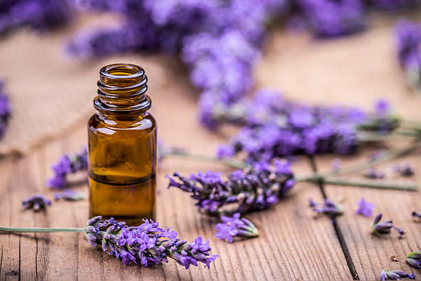

Life can be stressful, but nature always has an answer. Whether it’s the calming presence of trees, the
therapeutic joy of animals, or the awe of a starlit sky, our blog is here to remind you that
healing is closer than you think.
Explore Our Blog
Dive into topics about nature, healing, and well-being.
Mental Well-Being Through Nature
Nature has an incredible impact on our mental well-being. Taking a walk through a forest, sitting by a
river, or simply listening to birds can help reduce stress and anxiety. Reconnect with nature and feel
the transformation within.
Animal Therapy
Spending time with animals can do wonders for your mental health. Whether it's petting a dog, watching
pandas, or observing birds in the wild, animal therapy helps improve mood and reduce loneliness.
Holistic Living
Holistic living focuses on the balance between mind, body, and spirit. Incorporating meditation,
nutritious food, and mindfulness can lead to a fulfilling and healthy life.
The Healing Power of Stargazing
Stargazing has been shown to have a calming effect on the mind and body, helping to reduce stress and
anxiety.
The stillness and tranquility of the night sky can help to slow down our thoughts and bring a sense of
calm to the mind.
Stargazing at the end of a long day can help you unwind and relax.
DIY aromatherapy

Aromatherapy can help with mental health by reducing stress, anxiety, and depression, and improving
mood. It can also help with sleep.
-> All you need is white vinegar, orange or lemon peel, glass spray bottle and your favorite scented
essential oil. Fill the bottle halfway with white vinegar. If you don't like the harsh smell you can
dilute it with your favorite essential oil. Lavender Room Freshener: Lavender is a gift from nature.